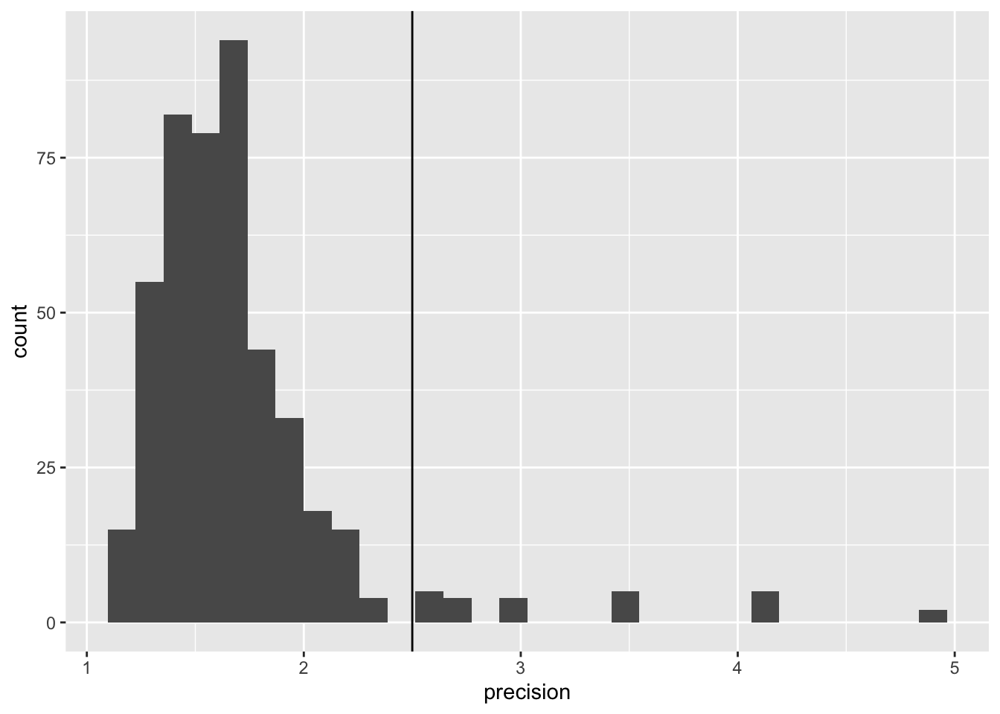
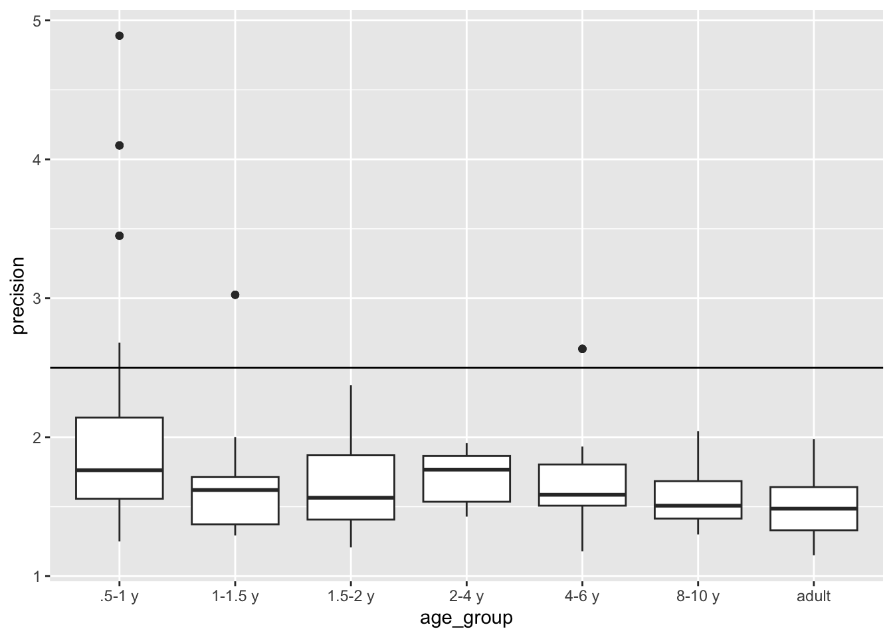
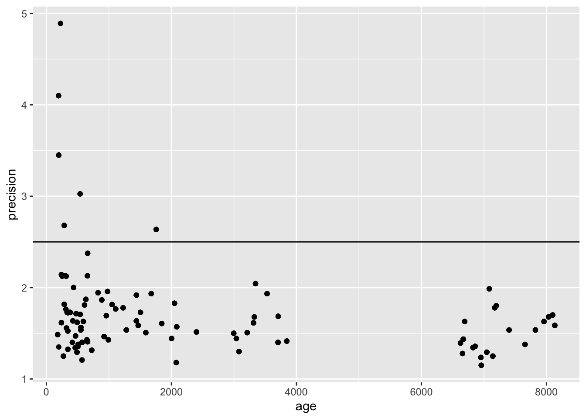
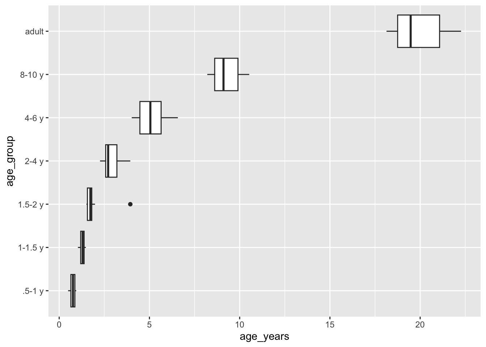
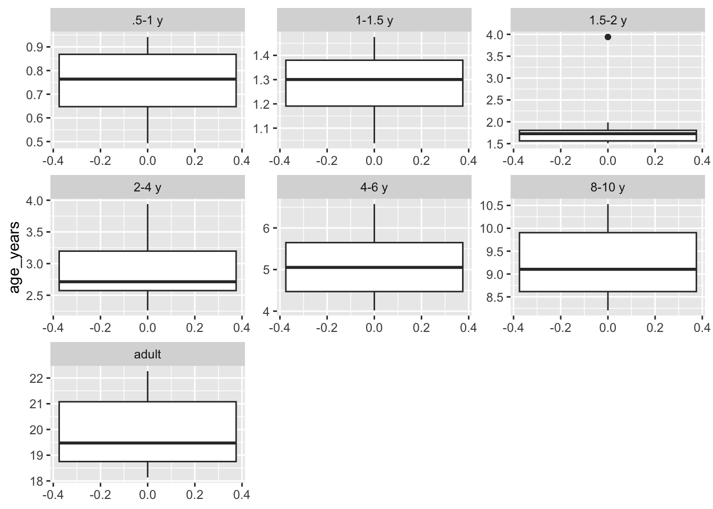

library(tidyverse)
library(here)Quarto HW
Load Libraries
Project Overview
This project has two raw data files at different scales from a study of infants, children, and adults watching a series of 7 video clips.
Steps 1 and 2 import and merge the data, and are included for reference. Step 3 focuses on exploratory data analysis (EDA).
Source Description
File 1: auc.csv
stim: Stimulus video (levels/labels provided below)id: Unique participant identifierage: Age in daysAUC_sal: Area-under-the-curve for a saliency modelAUC_dist: Area-under-the-curve for a distance model
AUC values indicate how well each model predicted where participants looked when watching a video. Values range from 0-1, where 0.5 is chance and 1 is perfect prediction.
File 2: participants_info_full_headers.csv
id: Unique participant identifier (matchesauc.csv)age_group: Categorical age variable with levels:- “.5-1 y”, “1-1.5 y”, “1.5-2 y”, “2-4 y”, “4-6 y”, “8-10 y”, “adult”
precision: Quality measure of the eye data (smaller is better)Seen X: Indicates whether the participant saw the stimulus video before the study (coded as SEEN (1), NOT SEEN (2), NOT SURE (3))
Step 1: Read in the AUC Data and Code stim as a Factor
auc <- read_csv(here("data_raw", "auc_bystim.csv"))Rows: 575 Columns: 5
── Column specification ────────────────────────────────────────────────────────
Delimiter: ","
dbl (5): stim, id, age, AUC_sal, AUC_dist
ℹ Use `spec()` to retrieve the full column specification for this data.
ℹ Specify the column types or set `show_col_types = FALSE` to quiet this message.stim_levels <- 1:7
stim_labels <- c("Fallon","Feist","Pentatonix","Science","Rube","Plane","Dogs")
auc <- auc %>%
mutate(stim = factor(stim, levels = stim_levels, labels = stim_labels))Step 2: Read in and Merge Participant Info Data
Read in the Participant Data
ppt <- read_csv(here("data_raw", "participants_info_full_headers.csv")) %>%
rename(id = `participant ID`,
age_group = `Age group`,
precision = "Precision")Rows: 115 Columns: 10
── Column specification ────────────────────────────────────────────────────────
Delimiter: ","
chr (1): Age group
dbl (9): participant ID, Precision, Seen Feist, Seen Plane, Seen Fallon, See...
ℹ Use `spec()` to retrieve the full column specification for this data.
ℹ Specify the column types or set `show_col_types = FALSE` to quiet this message.Pivot Longer and Extract Stimulus Names
ppt_long <- ppt %>%
pivot_longer(cols = starts_with("Seen"), names_to = "stim", values_to = "watched") %>%
separate(stim, into = c(NA, "stim"))Convert stim and watched to Factors
ppt_long <- ppt_long %>%
mutate(
stim = factor(stim, levels = stim_labels, labels = stim_labels),
watched = factor(watched, levels = 1:3, labels = c("Yes", "No", "Not Sure"))
)Merge the Data and Clean
ds <- left_join(auc, ppt_long, by = c("id", "stim")) %>%
drop_na(AUC_sal:AUC_dist)
# Write the cleaned data to file
ds %>% write_csv(here("data_cleaned", "cleaned.csv"))Step 3: Exploratory Data Analysis
3A. Precision Analysis
Visualizing Precision Distribution
ds %>%
ggplot(aes(x = precision)) +
geom_histogram() +
geom_vline(xintercept = 2.5)`stat_bin()` using `bins = 30`. Pick better value with `binwidth`.
Identifying Participants with Unusable Data
ds %>%
group_by(id, age_group) %>%
summarize(precision = mean(precision, na.rm = TRUE)) %>%
filter(precision > 2.5)`summarise()` has grouped output by 'id'. You can override using the `.groups`
argument.# A tibble: 6 × 3
# Groups: id [6]
id age_group precision
<dbl> <chr> <dbl>
1 52 1-1.5 y 3.02
2 78 .5-1 y 3.45
3 79 .5-1 y 4.89
4 81 .5-1 y 2.68
5 84 4-6 y 2.64
6 108 .5-1 y 4.1 ds %>% filter(precision > 2.5)# A tibble: 25 × 8
stim id age AUC_sal AUC_dist age_group precision watched
<fct> <dbl> <dbl> <dbl> <dbl> <chr> <dbl> <fct>
1 Feist 52 539 0.547 0.507 1-1.5 y 3.02 No
2 Science 52 539 0.447 0.356 1-1.5 y 3.02 No
3 Plane 52 539 0.498 0.484 1-1.5 y 3.02 No
4 Dogs 52 539 0.668 0.470 1-1.5 y 3.02 No
5 Feist 78 198 0.507 0.449 .5-1 y 3.45 No
6 Pentatonix 78 198 0.577 0.580 .5-1 y 3.45 No
7 Science 78 198 0.755 0.821 .5-1 y 3.45 No
8 Plane 78 198 0.611 0.555 .5-1 y 3.45 No
9 Dogs 78 198 0.494 0.485 .5-1 y 3.45 No
10 Feist 79 226 0.600 0.597 .5-1 y 4.89 No
# ℹ 15 more rowsComparing Precision Across Age Groups
ds %>%
group_by(age_group) %>%
summarize(across(precision, list(M = mean, MIN = min, MAX = max)))# A tibble: 7 × 4
age_group precision_M precision_MIN precision_MAX
<chr> <dbl> <dbl> <dbl>
1 .5-1 y 2.11 1.25 4.89
2 1-1.5 y 1.66 1.29 3.02
3 1.5-2 y 1.64 1.21 2.38
4 2-4 y 1.72 1.43 1.96
5 4-6 y 1.68 1.18 2.64
6 8-10 y 1.59 1.3 2.04
7 adult 1.50 1.15 1.99ds %>%
ggplot(aes(x = age_group, y = precision)) +
geom_boxplot() +
geom_hline(yintercept = 2.5)
ds %>%
ggplot(aes(x = age, y = precision)) +
geom_point() +
geom_hline(yintercept = 2.5)
3B. Age Analysis
Convert Age to Years
ds <- ds %>% mutate(age_years = age / 365.25)Visualizing Age by Age Group
ds %>%
group_by(id, age_group) %>%
summarize(age_years = mean(age_years)) %>%
ggplot(aes(y = age_group, x = age_years)) +
geom_boxplot()`summarise()` has grouped output by 'id'. You can override using the `.groups`
argument.
Alternative: Faceted Plot
ds %>%
group_by(id, age_group) %>%
summarize(age_years = mean(age_years)) %>%
ggplot(aes(y = age_years)) +
geom_boxplot() +
facet_wrap("age_group", scales = "free")`summarise()` has grouped output by 'id'. You can override using the `.groups`
argument.
Summary Table of Age in Years by Age Group
ds %>%
group_by(age_group) %>%
summarize(min_age = min(age_years), max_age = max(age_years))# A tibble: 7 × 3
age_group min_age max_age
<chr> <dbl> <dbl>
1 .5-1 y 0.493 0.942
2 1-1.5 y 1.04 1.48
3 1.5-2 y 1.51 3.94
4 2-4 y 2.26 3.94
5 4-6 y 4.02 6.57
6 8-10 y 8.21 10.5
7 adult 18.1 22.3